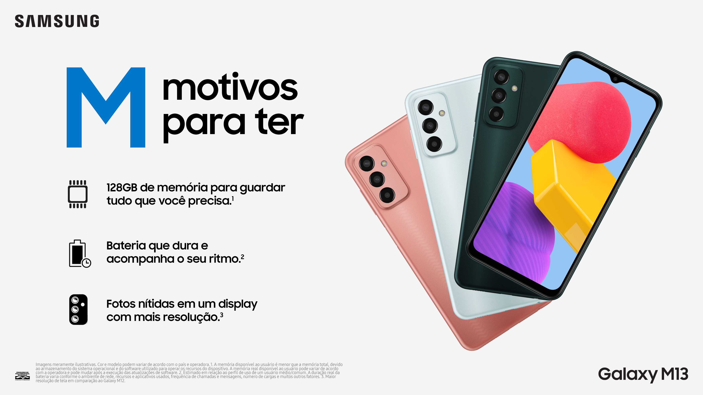

Samsung lança celular M13
postado em 14/09/2022
Lançado em julho de 2022, o Galaxy M13 é um dos smartphones intermediários mais recentes da Samsung. A linha M combina potencia com preço, perceptível quando o modelo mais recente da série está disponível no Brasil por R$ 1299,00. Para os interessados no eletrônico, o site IGN Brasil separou detalhes importantes para o consumidor antes da compra.
Leia a matéria completaApple lança novos iPhone 14; veja preços, cores e novidades
postado em 14/09/2022

A nova linha de celulares da Apple acaba de ser anunciada pela empresa em seu evento anual em Cupertino (Califórnia), sede da companhia nos Estados Unidos. São quatro modelos: iPhone 14, iPhone 14 Plus, iPhone 14 Pro e iPhone 14 Pro Max, com telas que variam de 6,1 polegadas (15,5 cm) a 6,7 polegadas (17 cm). De modo geral, eles contam com câmeras aprimoradas, conexão por satélite para comunicação em casos de emergência e as versões Pro têm uma leve mudança de visual na região da câmera de selfie. Todos já são habilitados para redes 5G.
Matéria completa no Uol